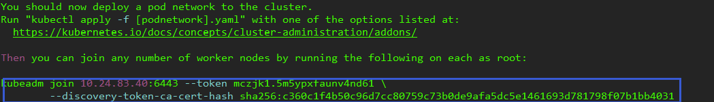

一、kubernetes安装
Kubernetes是由谷歌开发的一个开源系统，用于在集群内运行和管理以容器微服务为基础的应用。使用Kubernetes需要确保可以从Kubernetes集群外部访问在Kubernetes内创建的服务。
1、关闭防火墙
ufw disable
2、关闭selinux
sudo apt install selinux-utils
setenforce 0
3、禁止swap分区
swapoff -a
sudo vim /etc/fstab 注释掉swap一行
4、桥接的IPV4流量传递到iptables 的链
cat > /etc/sysctl.d/k8s.conf <<EOF
net.bridge.bridge-nf-call-ip6tables = 1
net.bridge.bridge-nf-call-iptables = 1
EOF
sysctl --system
5、配置k8s资源
curl -s https://mirrors.aliyun.com/kubernetes/apt/doc/apt-key.gpg | sudo apt-key add -
echo "deb https://mirrors.aliyun.com/kubernetes/apt/ kubernetes-xenial main" > /etc/apt/sources.list.d/kubernetes.list
apt-get update
6、安装nfs
apt-get install nfs-common
7、安装kubeadm(初始化cluster)，kubelet(启动pod)和kubectl(k8s命令工具)
apt install -y kubelet=1.21.3-00 kubeadm=1.21.3-00 kubectl=1.21.3-00
8、设置开机启动并启动kubelet
systemctl enable kubelet && systemctl start kubelet
9、Master节点执行初始化配置
kubeadm init \
--apiserver-advertise-address=10.24.83.22 \
--image-repository registry.aliyuncs.com/google_containers \
--kubernetes-version v1.21.3 \
--service-cidr=10.96.0.0/12 \
--pod-network-cidr=10.244.0.0/16 \
--ignore-preflight-errors=all
参数说明：
--apiserver-advertise-address=10.24.83.40 \ #修改为自己master ip
--image-repository registry.aliyuncs.com/google_containers \ #设置阿里镜像仓库
--kubernetes-version v1.21.3 \ #指定k8s版本
--service-cidr=10.96.0.0/12 \ #指定service ip网段
--pod-network-cidr=10.244.0.0/16 \ #指定pod ip网段
10、master节点拷贝认证文件
mkdir -p $HOME/.kube
sudo cp -i /etc/kubernetes/admin.conf $HOME/.kube/config
sudo chown $(id -u):$(id -g) $HOME/.kube/config
11、切换至根目录下，将node节点加入集群

kubeadm join 10.24.83.40:6443 --token mczjk1.5m5ypxfaunv4nd61 \
--discovery-token-ca-cert-hash sha256:c360c1f4b50c96d7cc80759c73b0de9afa5dc5e1461693d781798f07b1bb4031
12、配置命令补全工具
apt-get -y install bash-completion
source <(kubectl completion bash) #临时生效
echo "source <(kubectl completion bash)" >> ~/.bashrc #永久生效
13、查看集群状态
网络插件calico.yaml的链接：kubernetes(k8s)网络插件calico.yaml文件
# 手动安装网络插件
kubectl apply -f calico.yaml
执行
kubectl get nodes